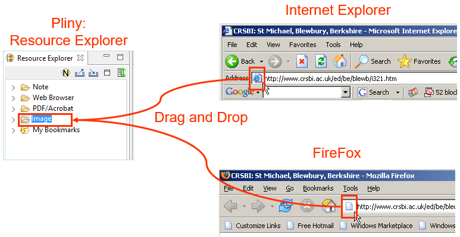

This section provides a reference section for the Pliny's image
annotator. If you are unfamiliar with how to use the image annotator within
Pliny, you might wish to see the tutorial on
this subject.
What's it for
The Image Annotator can be used whenever you wish to annotate an
image. It will launch in the large central "working are" in the Pliny
window.
Importing an Image
An image must be imported into the Pliny system before it can be
annotated. The importing process does two things:
- It caches a copy of the image in Pliny's own storage area. Pliny
always uses the image in its cache whenever it shows it to you.
- It creates an image resource which is Pliny's way of addressing the
image itself.
You import the image by dragging a reference to it, or from a web page
containing the image and dropping it on the Image folder in the Resource
Explorer:
This invokes the image importer which does somewhat different things
depending upon which of the three kinds of sources you give it.
Importing from an Image FIle
If you drag an image icon from the folders representing your
machine's storage onto the Image folder, the following things happen:
- The image is cached.
- A Pliny resource for the image is created.
- The resource is given a name based on the filename of the image.
You will probably want to change the resource's name.
- The image annotator opens.
You are now ready to start annotating the image.
Importing from a Web Page
You can request the importing of an image from a web page in three
ways:
- When looking at the web page in Pliny's embedded browser you can
either click the Image button (
 )
or drag the drag source to the Image folder in the Resource Explorer:
)
or drag the drag source to the Image folder in the Resource Explorer:

- When viewing a web page in an external browser you can drag the
icon because the URL in the location field to the Image folder in the Resource
Explorer:

- If you have either the HTML page or a shortcut to it on your hard
disk you may drag it's icon to the Image folder in the Resource Explorer:

What the importer does in all these cases is the same:
Importing an image from a web page
You can import a single image from a web page by pointing the mouse
pointer at the image and dragging it to the Image folder in the Resource
Explorer. In this case the importer will:
- Cache the image
- Create a Pliny image resource referring to this image.
- Name the resource according to the URL for the image. You will
probably wish to edit the name.
- Open the image in the image annotator.
Screen components
Here is a typical display of the Image Annotator, with its parts
labelled:
The Image annotator has four major areas that appear on the screen:
- As for all objects that appear in Pliny's main working area, a tab
shows above the editor pane, and identifies the image. The name showing there
comes from the name of the image resource. If you wish to change the name of
the resource you can do so by editing it in the Image Resource Name field, or
in the Resource Explorer.
- Below the tab is the main working area (called elsewhere the Pliny
toolbar because all of Pliny's annotation and notetaking tools have it). It
contains (left to right):
- this image's "Drag and Drop Object" (this is described
below).
- a field in which the image resource's name is shown (here
labelled "Image Resource Name") -- change the name by editing the field,
- A working toolbar area provides a set of tools that you can use
to create objects in the annotation area. For more information about it, see
the description below.
- a "spinner" labelled "Image Size Control" in the figure above
which is used to control the displayed size of the image -- click on the
spinner's up or down arrows, or type in a value (between 10 and 100) to change
the size of the image's display (this described immediately below),
- Below this area, and the main working area in the pane, is the
Annotation Area. Here the image appears, and the annotations attached to
it can be created and edited. It works in a way that is very similar to the
Note Editor's and embedded Web Browser's Reference Area except that the
annotation and note materials appear combined with the image they belong to.
There is more about the Annotation Area and how to work in it in
its description.
The Image Size Spinner
The image size control appears as a "spinner", shown here:
The number in the spinner shows the size (as a percentage) of the
image showing vs the full size of the image. The number showing here ("15")
should be read, then, that the image showing below is shrunk to 15% of the full
size of the image. To change the size of the image you can either replace the
number showing with a different number by clicking into the box and typing in
the new number (values 10 to 100 for 10% to 100% can be set). You can also
change the number by clicking (and perhaps holding) on the up arrow or down
arrow buttons to the right size of the spinner. Note that the image size will
not actually change until you release the up or down arrow.
ToolBar
The toolbar for the Image Annotator (which Eclipse places in the main
toolbar area) contains tools that work with the Annotator. Most of them are
used with the Annotation Area and allow things to be done within it. The
toolbar for the Image Annotator looks like this:
 : Use this icon by
clicking on the down arrow symbol (
: Use this icon by
clicking on the down arrow symbol ( ) to
its right rather than the icon itself. Clicking the down-arrow will cause Pliny
to generate a list of all resources managed by Pliny that refer to the current
image. To open one of these resources, choose it from the list.
) to
its right rather than the icon itself. Clicking the down-arrow will cause Pliny
to generate a list of all resources managed by Pliny that refer to the current
image. To open one of these resources, choose it from the list.
 : This icon allows you to
undo the previous action you have done in the Annotation area. Undo can also be
chosen from the "Edit" menu, or requested using the standard keystroke for your
platform.
: This icon allows you to
undo the previous action you have done in the Annotation area. Undo can also be
chosen from the "Edit" menu, or requested using the standard keystroke for your
platform.
 : This icon allows you to
redo an action you have just undone in the Annotation area. Redo is also
available from the "Edit" menu, or can be requested by the standard keystroke
for redo.
: This icon allows you to
redo an action you have just undone in the Annotation area. Redo is also
available from the "Edit" menu, or can be requested by the standard keystroke
for redo.
 : This icon allows you
to create a new note and a note reference for it that will appear in the
Annotation area. You can use it in two ways:
: This icon allows you
to create a new note and a note reference for it that will appear in the
Annotation area. You can use it in two ways:
- first click on the
button, then in the annotation area drag over the area there that you wish to
be used for the space the reference is to occupy, or
- you can drag the
button itself into the annotation area. This will give you a "standard size"
note which you can later change its size.
After Pliny has responded and created a reference and new note
for you, you will want to type in the note name and its text in the newly
created space. Each time a new note is created the "create new note" state is
cleared, and you must push the
again to create another note or drag a new note from the
button. There is a keyboard
shortcut that puts Pliny in "create new note" state as well: F5).
- : This icon
creates a full annotation for you. An annotation consists of a note, a
reference to the note (on this image), an anchor the note refers to and a
connection line between them. To use it, first click on the
button, then drag over the
area over the image where you wish the anchor to be placed. Pliny will respoind
by creating the anchor, a note and note reference and a linking line. You can
then type in the note title and text in the newly created reference and can
move the note to another place on the screen if you wish. Each time a new
annotation is created the "create new annotation" state is cleared, and you
must push the again to
create another annotation. The annotation button is a convenience only -- using
it is exactly equivalent to using the anchor button () to create the anchor, the note button
() and the connection button
(
 ) to join them together. The
keyboard shortcut for this function is F7.
) to join them together. The
keyboard shortcut for this function is F7.
- : This icon creates
an anchor area for you. To use it first click on the
as a button, then in the
annotation area drag out the area where you wish the anchor to appear. Pliny
will respond by creating the anchor for you. Each time a new anchor is created
the "create new anchor" state is cleared and you must push the
again to create another anchor.
The keyboard shortcut for this is F8.
- : This icon
allows you to create a connection between two objects that appear in the
annotation area (a line joining them). A connection is usually used to
represent some sort of conceptual connection between the two items.. To
establish a connection line first click on the
, then click in the reference
or anchor that should hold the start of the line, and drag to the reference or
anchor where the line should end. Each time you wish to create a new connection
you must first push the
again. The keyboard shortcut for this function is F6
 : Click on this icon to
cause all the references in this reference area to be minimized.
: Click on this icon to
cause all the references in this reference area to be minimized.
Drag and Drop
An important element of Pliny's design was in the work involved in
trying to make the creation of notes and annotations as straight-forward as
possible. To this end we have added various drag and drop features to Pliny. Of
course, references or anchors can be dragged about in a image's annotation area
-- that is how you make use of the 2D space the annotation area provided to
organise the notes. However, drag and drop can also be used to copy materials
from outside the image annotator into it, or from inside the image annotator to
other areas. Here is a summary of these drag and drop features available in the
annotator:
Into the Annotator
Here are the kind of things that can be dragged from elsewhere into
the annotation area:
- A reference to any resource can be dragged from the Resource
Explorer to the 2D annotation area. Pliny will interpret this as a request to
create a reference to that resource there. A reference to a note in the Note
Search View works the same way.
- If you have more than one editor open at the same time you can
drag a reference from one into the other by dragging the reference's drag
source object. See the figure in the section Out of the Annotator to
see where the drag source objects are.
- Text can be selected from another program that supports Drag and
Drop (such as Word) outside of Pliny and dragged onto the annotation area.
Pliny will interpret this as a request to create a note and a reference to it
in the area. If the dragged text begins with a short line of text that looks
like a heading, Pliny will interpret this as the note's title.
Out of the Annotator
Like the other editors in Pliny the annotator provides a drag
source object for its own image resource in the top left area in its
Pliny toolbar:
If you wish to create a reference to this particular image resource
within another resource you can drag this object to the place you wish it to
appear, or you can locate the source image resource in the Resource Explorer
and drag it from there.
Furthermore, the image annotator has an annotation area, and
references contained in that area can be dragged to the annotation or reference
areas of other resources by dragging the drag source object in the reference.
Here is an example:
Here we see Pliny displaying a note at the bottom and an image at
the top (the help section "Dividing a Pane: docking" in the topic
Managing Panes describes how to split the Pliny
window in this way). Suppose that the user wishes to add a reference to the
"Leaf Motif" note in the image to the "Leaf Motif: About" note at the bottom.
To do this the user should point the mouse pointer at the Leaf Motif reference
object's drag source object in the top area and drag it to the bottom area.
When the mouse bottom is released Pliny will create a new reference to the same
object here. Note that dragging between notes will only work when
one points at the specific drag source object -- here the
icon in the Note's reference
object. If one points elsewhere in the reference's object Pliny will not
understand it as a start of a request to drag a reference from one note to
another -- it will see it as a request to move the object in its current
reference space.